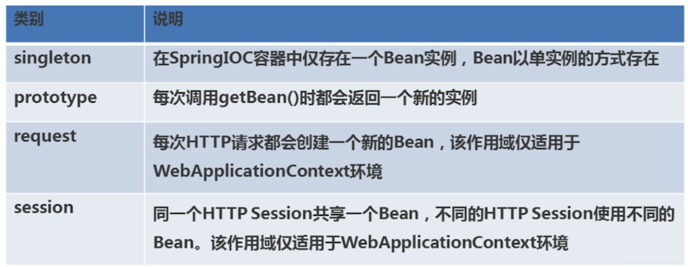
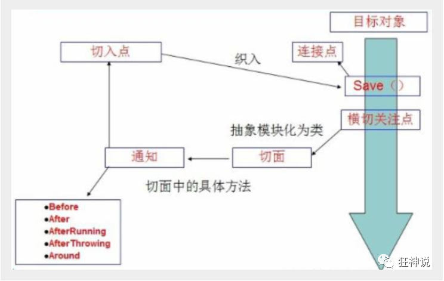

Spring基础
1、Spring
1. Spring的优点
- Spring是一个开源的免费的框架（容器）
- Spring是一个轻量级的、非入侵式的框架
- ==控制反转（IOC），面向切面编程（AOP）==
- 支持事务的处理，对框架整合的支持
总结：Spring是一个轻量级的控制反转(IOC)和面向切面编程（AOP）的框架；
2.IOC理论推导
1 |
|
- 在未使用set注入之前程序是主动创建对象！控制权在程序员手上！
- 使用了set注入之后，程序不再具有主动性，而是被动得接受对象！
这种思想本质上解决了问题，我们程序员不用再去管理对象得创建了，系统得耦合性大大降低~，可以更加专注得再业务的实现上！这是IOC的原型。
3.IOC本质
控制反转IOC(Inversion of control),是一种设计思想，DI(依赖注入)是实现IOC的一种方法，也有人认为DI只是IOC的另外一种说法，没有IOC的程序中，我们使用面向对象编程，对象的创建与对象间的依赖关系完全硬编码在程序中，对象的创建由程序自己控制，控制反转后对象的创建转移给第三方，所谓的控制反转就是：获得依赖对象的方式反转了。
采用XML方式配置Bean的时候，Bean的定义信息是和实现分类的，而采用注解的方式可以把两者合为一体，Bean的定义信息直接以注解的形式定义在实现类中，从而达到了零配置的目的。
控制反转是一种通过描述（XML或注解）并通过第三方去生产或获取特定对象的方式。在Spring中实现控制反转的是IOC容器，其实现方法是依赖注入（Dependecy injection DI）
2、HelloSpring
ref：引用Spring容器中创建好的对象（Bean）
value：具体的值，基本数据类型
实体类：
1 | public class Hello { |
spring bean的配置文件：
1 |
|
测试类：
1 | public class myTest { |
3、IOC创建对象的方式
- 使用无参构造创建对象，默认！
- 假设我们要使用有参构造方式创建对象时
- 下标赋值创建
1 | <bean id="student" class="com.huang.pojo.Student"> |
- 通过类型创建（不建议使用）
1 | <bean id="student" class="com.huang.pojo.Student"> |
- 通过参数名创建
1 | <bean id="student" class="com.huang.pojo.Student"> |
总结：在配置文件加载的时候，Spring容器中管理的对象就已经初始化了，意思是不管是否调用其中的对象，对象在IOC容器中已经创建了
4、Spring配置
4.1、别名
1 | <bean id="address" class="com.huang.pojo.Address"> |
4.2、Bean的配置
1 | <bean id="student" class="com.huang.pojo.Student" name="Student"/> |
id是指bean的唯一标识符，也可以看作New对象时给出的对象名
class是指对象的所对应的全限定名
name是指对象的别名
4.3、import
1 | <import resource="classpath*:"/> |
import 用作多个程序员开发Sprin配置，将之汇总所用的标签，如果重复也可以合并
5、DI 依赖注入
构造器注入
- 下标注入，小标从零开始 ==indexname==
- 类型注入，类型必须写全限定名 ==type==
- 参数注入，根据参数名进行注入 ==name==
Set方式注入
- 依赖：bean对象的创建依赖于容器
注入：bean对象中的所有属性，由容器注入
使用
1 | <beans xmlns="http://www.springframework.org/schema/beans" |
- 测试
1 | public class Test { |
拓展方式注入
- p命名空间
1 | xmlns:p="http://www.springframework.org/schema/p" |
使用：
1 | <beans xmlns="http://www.springframework.org/schema/beans" |
- c命名空间
1 | xmlns:c="http://www.springframework.org/schema/c" |
1 | <beans xmlns="http://www.springframework.org/schema/beans" |
注意：使用P命名空间和C命名空间不能直接使用需要导入xml约束.
bean的作用域

- 单例模式（Spring默认机制）
1 | <bean id = "people" class="com.huang.pojo.People" scope="singleton"> |
- 原型模式：每次从容器中get的时候，都会产生一个新对象
1 | <bean id = "people" class="com.huang.pojo.People" scope="prototype"> |
- 其余的reques、session、application、这些都只能在web开发中使用到
6、Bean的自动装配
- 自动装配是Spring满足bean依赖一种方式
- Spring会在上下文中自动寻找，并自动给bean装配属性！
在Spring中有三种装配的方式
- 在Xml中显示的配置
- 在java中显示配置
- 隐式的自动装配bean
测试
环境搭建：一个人有两个宠物
byName：会自动在容器上下文中查找，查找和自己对象set方法后面的值相对应的bean ID！
1 | <bean id="cat" class="com.huang.pojo.Cat" /> |
byType:会自动在容器上下文中查找，查找和自己对象属性类型相同bean ID！（类型必须全局唯一,可以省略ID）
1 | <bean id="cat11" class="com.huang.pojo.Cat" /> |
小结：
- 在时候byName自动装配的时候，需要保证所有bean的id唯一，并且这个bean需要和自动注入的属性的set方法的值一致！
在时候byType自动装配的时候，需要保证所有bean的class唯一，并且这个bean需要和自动注入的属性类型一致！
注解实现自动装配
jdk1.5支持注解开发 ， Spring2.5支持注解开发
要使用注解开发须知：
- 导入约束：context约束
- 配置注解的支持：
1 | <context:annotation-config></context:annotation-config> |
@Autowired
可以直接在属性上使用即可，也可以在set方式上使用！
使用Autowired 我们可以不用编写Set方法了，前提是你这个自动装配的属性在IOC（Spring）容器中存在（进行注册），且符合名字byName。
如果显示定义了Autowired的required的属性为false，说明这个对象可以为null，否则不允许为空
@Nullable
字段标记了这个注解，说明这个属性可以为null
@Qualifier
如果@Autowired自动装配的环境比较复杂，自动装配无法通过一个注解完成的时候，我们可以使用@Qualifiter(value=”XXX”)去配置@Autowired，XXX为IOC容器中注册的ID
@Resource
可以通过byType和byName查找，可以通过name值设置ID
小结：
@Resource和@Autowired的区别：
- 都是用来自动装配的，都可以放在属性字段上
- @Autowired 通过byType的方式实现
- @Resource默认通过byName的方式实现，如果找不到名字，则通过byType实现！如果俩都找不到就报错
- 执行顺序不同：@Resource默认通过byName的方式实现，@Autowired 通过byType的方式实现
7、使用注解开发
在Spring4之后，要使用注解开发，必须要保证==Aop==的包导入了
使用注解需要导入context约束，增加注解的支持
- bean
@Component 组件，放在类上，说明这个类被Spring管理了，就是bean！
- 属性如何注入
@Value 依赖注入，将属性赋值
- 衍生的注解
@Component 有几个衍生注解，我们在web开发中，会按照mvc三次架构分层
- dao（@Repository）
- service（@Service）
- controller（@Controller）
这4个注解功能都是一样得，都是代表将某个类注册到Sprng中，装配Bean
- 自动装配注解
@Autowired
- 作用域
@Scope
- 小结
Xml与注解：
- Xml更加万能，适用于任何场合！维护简单方便
- 注解不是自己类使用不了，维护相对复杂
通过Xml配置管理Bean，注解只负责完成属性的注入；
8、Java配置Spring
抛弃Xml配置，全权交给Java来进行配置Spring
JavaConfig是Spring的一个子项目，在Spring 4之后，它成为了一个核心功能
@configuration 这个也会被Spring容器托管，注册到容器中。因为他本来就是一个component，它代表了一个配置类，类似于applicationContext.xml
@ComponentScan 可以进行扫描
@Bean 注册一个bean，就相当于bean标签，用于方法上，id是方法名，class是方法的返回值
1 | //配置类 |
1 | //注册类 |
1 | //测试类 |
9、代理模式
代理模式分为：
- 静态代理
- 动态代理
9.1、静态代理
角色分析：
- 抽象角色：一般使用接口或者抽象类来实现
1 | public interface Rent { |
- 真实角色：被代理的角色
1 | public class Host implements Rent { |
- 代理角色：代理真实角色，代理真实角色后，我们一般会做出一些附属操作
1 | public class Proxy implements Rent { |
- 客户：访问代理对象的人
1 | public class client { |
静态代理模式的好处：
- 可以使真实角色的操作更加存粹! 不用去关注一些公共的业务
- 公共业务就交给了代理角色！ 实现了业务的分工
- 公共业务发展扩展的时候，方便集中管理
缺点：
- 一个真实角色就会产生一个代理角色
- 代码量会翻倍，开发效率会变低
==9.2、动态代理==
动态代理和静态代理角色一样
- 抽象角色：一般使用接口或者抽象类来实现
1
2
3
4
5public interface Rent {
void rent();
}- 真实角色：被代理的角色
1
2
3
4
5
6public class Host implements Rent {
public void rent() {
System.out.println("房东需要出租");
}
}- 代理角色：代理真实角色，代理真实角色后，我们一般会做出一些附属操作
1
2
3
4
5
6
7
8
9
10
11
12
13
14
15
16
17
18
19
20
21
22
23
24
25
26
27
28public class Proxy implements InvocationHandler {
private Rent rent;
public void setRent(Rent rent) {
this.rent = rent;
}
public Object invoke(Object proxy, Method method, Object[] args) throws Throwable {
eat();
Object result = method.invoke(rent, args);
sleep();
return result;
}
public Object getProxy(){
return java.lang.reflect.Proxy.newProxyInstance(rent.getClass().getClassLoader(), rent.getClass().getInterfaces(),this);
}
public void eat(){
System.out.println("看房之前先吃饭");
}
public void sleep(){
System.out.println("看完房子可以休息");
}
}- 客户：访问代理对象的人
1
2
3
4
5
6
7
8
9
10
11
12
13
14
15public class client {
public static void main(String[] args) {
Host a=new Host();
Proxy b=new Proxy();
b.setRent(a);
Rent proxy = (Rent) b.getProxy();
proxy.rent();
}
}动态代理的代理类是动态生成的，不是程序员写的
动态代理分为两大类：
- 基于接口的动态代理 —-JDK动态代理
- 基于类的动态代理 ——cglib
- java字节码实现：javasist
需要了解两个类：Proxy 和 InvocationHandler
动态代理模式的好处：
- 可以使真实角色的操作更加存粹! 不用去关注一些公共的业务
- 公共业务就交给了代理角色！ 实现了业务的分工
- 公共业务发展扩展的时候，方便集中管理
- 一个动态代理类代理的是一个接口，一般就是对应的一类业务
- 一个动态代理类可以代理多个类，只要是实现了同一个接口即可
10、AOP
==什么是Aop：==
Aop(Aspect Oriented Programming) 面向切面编程，通过预编译方式和运行期动态代理实现程序功能的统一维护的一种技术，Aop是OOP的延续，是软件开发中的一个热点，也是Spring框架中的一个重要内容，是函数式编程的一种衍生范型。利用Aop可以对业务逻辑的各个部分进行隔离，从而使得业务逻辑各部分之间的耦合度降低，提高程序的可重用性，同时提高了开发的效率

==Aop在Spring中的作用==
提供声明式事务：允许用户自定义切面
- 横切关注点：跨越应用程序多个模块的方法或功能。即是，与我们业务逻辑无关的，但是我们需要关注的部分，就是横切关注点。如日志，安全，缓存，事务等待……
- 切面(ASPECT):横切关注点，被模块化的特殊对象。它是一个类
- 通知(Advice)：切面必须要完成的工作，即，它是类中的一个方法
- 目标(Target)：被通知的对象
- 代理(Proxy)：向目标对象应用通知之后创建的对象
- 切入点(PointCut)：切面通知执行的“地点”的定义
- 连接点(JointPoint)：与切入点匹配的执行点
SpringAOP中，通过Advice定义横切逻辑，Spring中支持5种类型的Advice:

即 Aop 在 不改变原有代码的情况下 , 去增加新的功能 .
使用AOP织入，需要导入一个依赖包！【重点】
1 | <!-- https://mvnrepository.com/artifact/org.aspectj/aspectjweaver --> |
方式一：使用Spring的API接口(主要SpringApi接口实现)
- BeforeAdvice
method :要执行的目标对象的方法
args：参数
target：目标对象
- AfterAdvice
- AfterReturningAdvice
1 | <bean id="log" class="com.huang.Log.Log"/> |
方式二：使用自定义的类（主要是切面定义）
1 | <aop:config> |
方式三：使用注解实现！
1 | public interface UserService { |
1 | package com.huang.service; |
1 |
|
1 |
|
Aop注解开启 ==注意！==
1 | <!--要想使用注解使用AOP必须要在ApplicationContext中加入下列语句--> |
@Aspect 标注这个类是一个切面
@Before（写切入点 execution（ .*(..)））
execution中参数代表
修饰符 那个路径下的 类.方法(参数)
例如
execution(* com.huang.pojo.User.eat.(..))
@After
@Around 在环绕增强中，我们可以给定一个参数,代表我们要获取处理切入的点
@EnableAspectJAutoProxy(proxyTargetClass = true) 开启切面的自动代理
11、整合Mybatis
步骤：
- 导入相关jar包
- junit
- jdbc-connector
- mbatis
- spring
- mybatis-spring
- spring-jdbc
- aspectjweaver
编写配置文件
测试
- DataSoruce
1 | <bean id="dataSource" class="org.springframework.jdbc.datasource.DriverManagerDataSource"> |
- SqlSessionFactory
1 | <bean id="sqlSessionFactory" class="org.mybatis.spring.SqlSessionFactoryBean"> |
- SqSessionTemplate ( 由于没有set方法，所有只能使用构造器注入)
1 | <bean id="sqlSession" class="org.mybatis.spring.SqlSessionTemplate"> |
- 接口
1 | public interface UserMapper { |
- 实现类
1 | public class UserMapperImpl implements UserMapper{ |
- mybatis的查找
1 | <mapper namespace="com.huang.mapper.UserMapper"> |
- 测试
1 | public class test { |
12、声明式事务
Spring中的事务管理分为两类
- 声明式事务：AOP 不影响原有代码
- 编程式事务： 需要在代码中，进行事务的管理
1 | <!--配置声明式事务--> |
思考：
为什么需要事务？
- 如果不配置事务，可能存在数据提交不一致的情况下；
- 如果我们不在Spring去配置声明式事务，我们就要在代码中手动配置事务
- 事务在项目的开发中十分重要，设计到数据的一致性和完整性问题，不可以马虎